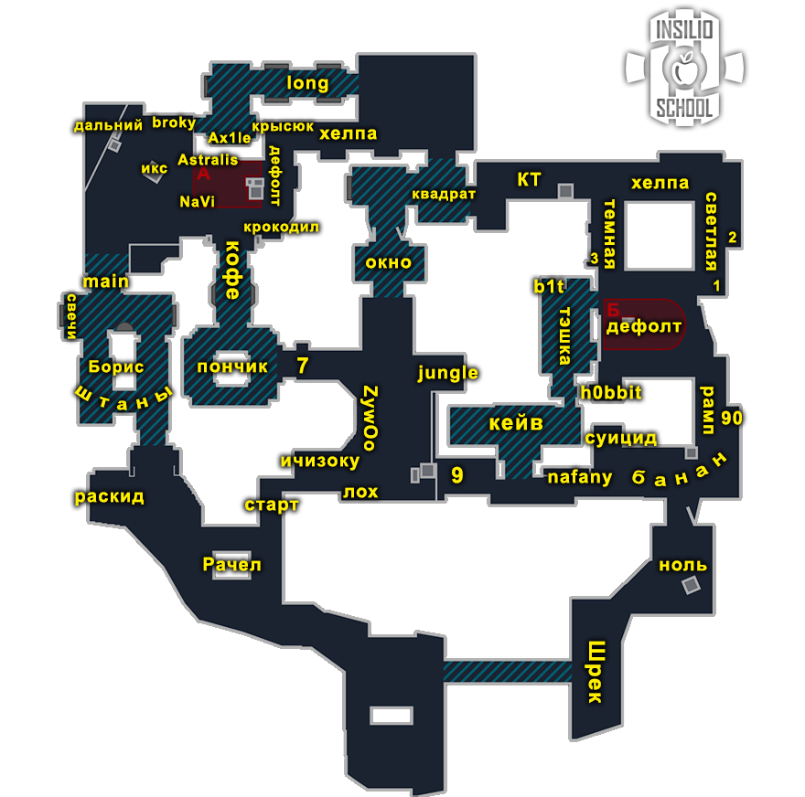
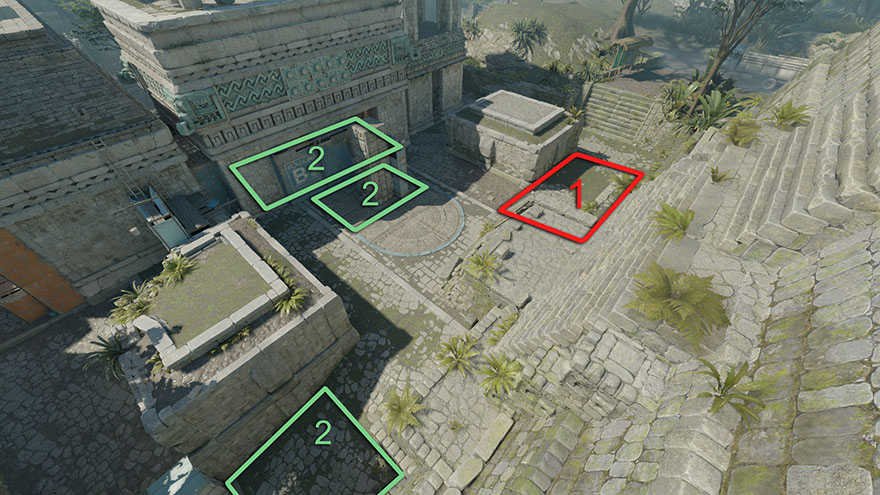

Ancient
Дефолты, роли, правила, выходы, ретейк, пост-плент и комбинации
Термины
| Термин | Значение |
|---|---|
| Дефолт | Расположение игроков по карте во время обычного раунда. Часто играется, чтобы понять, как играет противник на карте или на каких-то её участках. |
| Кор (ядро) | Основная сила команды: 3+ игрока, которые играют вместе. |
| Зоны карты | Места, контроль которых в данном раунде и в данный момент даёт преимущество. |
| 3-1-1 (цифры) | Количество игроков под точкой А, на миду, на точке Б (порядок зависит от карты). На Ancient: А-Мид-Б. |
| Контакт | Движение до первого столкновения с противником; издаётся минимум шума, гранаты не используются. |
| Люрк | Игрок, отвечающий за свою зону. Если команда выходит через его зону, он обычно выходит первым. Если команда играет через другую зону, он закрывает спину тиммейтам или играет в спину противникам через свою зону. |
| Микро | Умение контролировать персонажа: движение, аим, правильное использование гранат. |
| Макро | Умение понимать ситуацию и принимать решения: пассивно или агрессивно, быстро или медленно и т.п. |
| Выход (Execute) | Плотная атака точки с гранатами. |
| Сплит | Атака точки с двух сторон (см. раздел 11). |
Позиции и зоны карты


Названия позиций, которые используются в гайдах: А-мейн, пончик (донат), храм, X, broky, буст, дефолт, штаны, мид (окно, топ-мид, 9-ка, ящики, рачел), кейв (хелпующий), банан, светлая, тёмная, тешка, двери, рампа, 90, плент, люрк, Т-респ, коннектор, джангл (карман).
Дефолт: что это и как устроен
Большинство хороших команд играют первые бай-раунды от дефолта, особенно если не знают, как играет соперник. Это проверенная тактика, чтобы не нарваться на заготовки соперника. Качественные коллективы за счёт дефолта переигрывают многих соперников, не показывая скрытый пул заготовок.
Три отрезка дефолта
- Старт — собираем информацию и отжимаем зоны карты, получаем над ними контроль.
- Середина — принимаем решение (мид-кол), куда идём дальше. Зону к этому моменту должны уже отжать либо вести за неё войну.
- Конец — постановка бомбы и пост-плент.
Типы дефолтов
- Обычный. Играем спокойно, от информации, не торопимся, отжимаем всё под гранаты и работаем вместе. Если нужно, реагируем по информации, отменяем план и выходим туда, где соперник даёт минимальное сопротивление. Пример: КТ показывают агрессию на миду (для этого нужно минимум 2-3 КТшника) — быстро реагируем в точку, если есть возможность.
- Агрессивный. Задача — отжать конкретную зону. Даже если получили информацию, что КТ дерётся за мид, принимаем файт и деремся за зону. Главное — навестись на голову быстрее оппонента. При этом грамотно используем гранаты и движение, а не просто бежим +W: есть мысль на раунд, которую реализуем.
Дефолты на Ancient
Дефолты атаки (Т)
| Дефолт | Описание | Большинство | Меньшинство |
|---|---|---|---|
| 1-1-3 | Кор занимает банан (один работает по кейву, второй саппортит, третий контролит рампу), один под мид, один контролит А. | Доиграть сплит А или сплит Б. | Кулаком А или Б, без люрка (кроме ситуативного люрка, оказавшегося на другом участке и не успевающего ротироваться). |
| 1-4 | Агрессивный: вчетвером работаем по банану. Соло-игрок играет под мидом/А, может доиграть люрком либо развернуть атаку. | Сплит А или сплит Б. | Контакт А или Б, без люрка (с той же оговоркой). |
| 1-2-2 | Один контролит А / саппортит мид, двойка под мидом (резко занимает либо перезанимает), вторая двойка работает под Б (банан). | Килл мид, идём А; килл кейв-рамп, сплит Б. | Контакт А или Б, без люрка (с той же оговоркой). |
Дефолты защиты (КТ)
| Дефолт | Тип | Суть | Цель / план Б |
|---|---|---|---|
| 1-2-2 | Агрессивный | Снайпер играет под А. Двойка на миду откидывает антираш и лезет в 9-ку. Пара под Б откидывает 2 молика и смок в двери, занимает банан. | Цель: занять мид и девятку. План Б: А-игрок берёт мид, остальные ротируются на Б. |
| 2-1-2 | Пассивный, упор на точки | Играем мид на инфу: AWP на пончике или на стрейфе рифл смотрит проход в окно. Если дан смок на пончик, третий с Б должен почекивать окно (если мид-игрок ушёл на Б). Играем 2А + 3Б. | Цель: принять А или Б. План Б: прожать мид, собрать инфу, сделать «Инсилио» (прожим мида пончик+окно), при этом Б играем в ретейк. |
| 1-1-3 | Упор на Б | — | Цель: отжать банан. План Б: мув Инсилио (мид-ретейк), бросить Б. |
Видео каждого дефолта — в оригинале. На записи лекции отдельно разбирался вопрос «почему нет дефолта 4-1» и важные зоны карты.
Роли
Роли за КТ (в скобках — pro-игроки, на которых ориентируется лекция).
| Роль | Описание |
|---|---|
| Опорник А (ropz, jimpphat, zont1x) | Стена А-плента. Можно меняться с AWP, играть вторым на миду в агрессию либо прятаться третьим на Б. |
| Опорник Б (Niko, magiix, JL) | Держит Б-рампу: нужно уметь грамотно отдавать её, понимать, когда прожимать и под какие гранаты. |
| Мид-игрок (donk, elige, frozen) | Решает, как играть мид, и строит от этого геймплей: в агрессию (залезть на 9-ку) или пассивно с пончика. |
| AWP (sh1ro, broky, monesy) | Многофункциональная карта для снайпера: пассивный режим под А, на Б-точке и в донуте, агрессивный — на миду. |
| Игрок кейва (siuhy, rain, flit) | Самая боевая роль. Нужно уметь играть и в агрессию, и в пассивную оборону. Для тех, кто любит дуэли. |
AWP-материалы (в оригинале видео): monesy — агрессивная и пассивная игра на миду; sh1ro — агрессивная и пассивная игра на А, на Б, игра в коннекторе.
Общие правила (атака и защита)
Атака
- Если у защиты нет AWP — играть контактнее; как опция — кидать меньше смоков.
- На позднем тайминге, после разменов, играть через «центр карты» в контакт, без шума.
- Первым играет большинство (кор).
- Люркеры должны контачить точки, если кор плохо разменялся.
- Ставить бомбу под тиммейта или под зону, из которой пришли.
- Когда КТ начал дефьюзить бомбу — считать секунды.
- При заходе на точку следить за кучностью; останавливать тиммейта, если он далеко ушёл.
- Считать смоки, которые тратит КТ.
Защита
- Последний смок всегда на бомбу.
- Ситуации 2в1 играть вместе.
- Первым играет большинство (на ретейк).
- В меньшинстве нужно что-то делать: вместе пушить или стакать, то есть рисковать.
- В большинстве играть от зон, без особого риска, больше на чек / на стрейфе.
- Против +W-игроков тратить все антираш-гранаты и пикать в ответ на средних таймингах.
- Если под одной точкой агрессия, под другой надо играть в отдачу.
Правила карты Ancient
Атака на Ancient
- При сплите А сейвим молотов для пончика.
- Против плохого бая не идём в кейв; если варианта нет — играем в размен.
- Если КТ играет упор мид (линейка), два варианта:
- играть А резко (запредиктить игру в линейку);
- ретейкать одну из зон (мид или банан) 4+1, где один игрок-люрк ловит КТ в спину (на миду или на банане).
- Если занимаете фаст 9-ку, нужно, чтобы помогли с топ-мида.
- Не показывать тень до выхода на А.
- Чтобы законтрить агрессию КТ через 9-ку, кидайте молотов на 9-ку или на ящики — прямая контра.
Защита на Ancient
- За КТ нужно владеть минимум одной из трёх зон: мид, кейв, штаны (в порядке важности).
- Нельзя соло драться за мид.
- Отдавать кейв, если плохой респ и вы играете против форс/эко. (видео плохого и хорошего варианта — в оригинале)
- Если заняли и мид, и банан (линейка), один игрок играет антифлеш либо на стрейфах в кейве на инфу.
- Игрок в окне не нужен на среднем тайминге, если есть игрок в пончике, который чекает кросс.
- Если хелпующего Б отгоняют с кейва/тешки или он изначально играет на отдачу, игроку рампы не стоит играть упор.
Занятие ключевых зон за Т и мув Insilio
- Прожим мида от Insilio (КТ-мув «Инсилио»: прожим мида пончик+окно) — видеогайд. Используется как план Б в дефолтах защиты 2-1-2 и 1-1-3.
Выходы и сплиты
Разница: выход — плотная атака одной точки с гранатами; сплит — атака точки с двух направлений.
Выход А
- Плотный выход: смок в КТ + пончик, молотов в дефолт; всегда пушим пончик под флешки, летящие за Х.
- Смоки лучше кидать одному игроку. Старайтесь занять Х и, по возможности, пончик.
- Если пончик занять не вышло — играйте от храма + мейна; можно сесть в смок КТ, но это риск, зависящий от нескольких факторов.
- Отличный раунд для первого бая и против соперников, играющих линейку (упор мид + занимают банан, любят лезть в 9-ку).
Выход Б
- Если играем быстро, лучше потратить смок в окно.
- Всегда тратим: молотов в дефолт + смок в тёмную, общую флешку и затем докидываем 2 флешки, которые не слепят своих.
- Всегда нужен человек, который потушит молотов в рампе.
- Обязательно занять либо светлую (право), либо тешку; без этих зон раунд легко проиграть.
- Хорош против плохого бая или когда у КТ мало гранат и нет AWP.
- Резко сыграть Б после дефолта всегда лучше, чем нагло рашить против фулл-бая.
Сплит А
- Нужны смок в окно + кейв; смок пончика необязателен (доп. опция).
- Главное — законтрить агрессию КТ на миду: тратим флешки, чекаем карман (джангл), ждём врыв КТ в зонах окно, пончик, кейв.
- Затем молотов в пончик (самое важное) и сплит.
- Варианты (мейн-пончик-окно): а) 2-2-1 — самый сильный, но сложно реализовать; б) 2-3 — самый базовый, без окна; в) 1-1-3 — хитрый, работает не всегда, потенциал огромный.
- Игроки в А-мейне действуют после того, как игроки пончика найдут контакт по пленту.
- Если КТ дают играть мид, раунд получается очень хорошо.
Сплит Б
- Имитируем дефолт 1-4, занимаем кейв, далее доигрываем 2-3 либо 3-2.
- Тратим 2 смока (есть тешка, светлую занимать не обязательно), молотов в дефолт всегда (турция).
- Можно пикнуть светлую под ревил-гранатой или флешкой.
- Играйте на бомбу — на Б-пленте её очень легко нашить.
- Если КТ не рейтят кейв и играют 2 под Б без реакций, раунд получится всегда.
- Против лоу-бая очень аккуратно в кейве (под гранаты, размен 2-3 игроков).
Ретейк
Ретейк А
- Давать смок в мейн, выбивать массой через храм или через КТ под флеш (через храм трое, через КТ четверо).
- В пончике максимум один люркующий.
- Пример: Arcred 12-11 Insilio (видео в оригинале).
Ретейк Б
- Ретейк через светлую. Если идёте с 9-ки — лучше в рампу, но играть по таймеру.
- Давать смок в тешку либо на бомбу.
- Примеры (видео): Heroic 0-2 Mibr, Heroic 7-4 Mibr, Saw 0-2 Aurora.
Пост-плент
Позиции в скобках — рекомендуемое число игроков.
| Точка | Позиции |
|---|---|
| А | X (1), broky (1) (в источнике: «если есть в храме свой»), буст (2), мейн (2), дефолт (2) |
| Б | светлая (1), плент (2), кейв (2), 90 (2) |
Числа в скобках приведены как в источнике.
Пост-плент А T
Пост-плент Б

Парные комбинации
За Т
- Энтри-буст под А — поиск энтри под А-точкой; делается в паре со снайпером.
- Дабл-пик мида — пик мида с двух сторон в тайминг под флеш; задача — отбить мид.
- Буст мид — простой способ найти энтри и законтрить агрессию в 9-ку. Обратите внимание, как кидается смок на тушение.
- Резкое занятие кейва — быстрый пуш кейва под 2 флешки. Нужны: респ, смок на тушение, саппорт, кидающий флешки.
- Энтри-буст под Б — лёгкий способ найти энтри, часто играется в дефолте. Нужен дополнительный фокус на 9-ке.
За КТ
- Сетап под А — парная игра со снайпером, перспективный сетап для приёмки А; можно прожимать дальше, если есть полная информация под Б или миду. А-опорник, остающийся в лейте в штанах, сильно тормозит любую атаку под этот плент.
- Пик под флеш А-мейна — одно из лучших решений для проверки штанов; особенно эффективно в середине игры.
- Пик кейва под флеш — самый популярный пик на карте, делать нужно идеально: флешку кидать в тайминг, игроку, пикающему под неё, не заигрываться.
- Занятие банана — для пары Б-игроков, чтобы играть в агрессивный КС.
- Буст под Б — контра буста атаки и вариант для энтри-фрага; хорошо раскрывается при 1-2 ганах.
- Флешки для мида — сильная комба для файта на миду; хороша против команд, часто рейтящих мид. Делать при достаточном количестве гранат и хорошей экономике. Если файт не найден — лезть в 9-ку или играть линейку с Б-игроками.
- Ревил окна — двойной пик мида, чтобы поймать соперника на среднем тайминге. В паре с игроком пончика; можно попросить флешку у А-опорника.
- Агрессивный рачел — пик мида под флешку, чтобы поймать игроков, готовящих выход или ретейк мида. Нужно чувствовать тайминг.
Вопросы из чата лекций (темы)
В записях есть ответы на следующие вопросы (сами ответы только в видео):
- Лекция 1 (дефолт, роли): про карту Ancient, почему нет дефолта 4-1, что делать, если в дефолте 1-4 люрк умер, как выбрать роль, что делать, если в команде 3 человека, про мету и свои идеи на раунд, про микроигру.
- Лекция 2 (ретейк, пост-плент, выход): молотов в хоббит и дефолт, не разгорающийся до выхода с кейва; разница выхода и сплита; зоны рампа + светлая на пост-пленте; где стоять с AWP под Б; смок или молотов под 9-ку при занятии мида за КТ; почему при выходе на Б не выходят сразу из кейва; куда идти снайперу при ретейке; основная задача опорников при выходе на Б (удержание светлой?); что делать, если одна из сторон атаки провалилась; профит ретейка светлой за Т; что такое второй темп; ретейк зоны при нехватке гранат; смысл сейвить армор на пистолетке; как доигрывать, если выход застопили гранатами; как отвлекать противника на праках, если он знает ваш раунд; как разыграть большинство за Т при инста-смоке в дверях; инста-смок на мид от авика с темпла; контра молотова на банан от игрока кейва при дефолте 1-1-3.
- Лекция 3 (правила): где брать HLTV-ссылки; зачем считать секунды при дефьюзе.
- Лекция 4 (комбинации): ситуация 4в2 при выбитой пачке — идти ли искать терроров; как контрить фулпачку с одной 10-кой при лоу-левелах.
Приложение: таймкоды записей
Лекция 1 (запись 3 августа) — термины 13:37; типы дефолтов 17:46; позиции 18:50; дефолты атаки 20:24 (1-1-3 — 20:48, 1-4 — 24:21, 1-2-2 — 27:01, почему нет 4-1 — 30:23); важные зоны 31:13; дефолты защиты 32:00 (1-2-2 — 32:35, 2-1-2 — 36:13, 1-1-3 — 39:39); роли за КТ 47:30 (опорник А 48:08, опорник Б 50:20, мид 52:37, AWP 53:37, кейв 54:30); домашка 56:05.
Лекция 2 (запись 10 августа) — ретейк А 5:34; ретейк Б 9:07; пост-плент А/Б 16:24; выходы 22:32 (выход А 22:56, выход Б 29:49); сплит А 34:00; сплит Б 43:30; итог 51:30; домашка 1:00:50.
Лекция 3 (запись 17 августа) — правила атаки 5:36–17:21 (#1–#8); правила защиты 18:06–26:17 (#1–#7); правила Ancient 28:16 (атака 29:59–41:55, защита 43:26–55:15); домашка 56:16.
Лекция 4 (запись 24 августа) — энтри-буст под А 8:19; дабл-пик мида 9:32; буст мид 11:35; занятие кейва 13:34; энтри-буст под Б 15:45; сетап под А 17:10; пик под флеш А-мейна 20:41; пик кейва под флеш 22:15; занятие банана 24:35; буст под Б 26:44; флешки для мида 28:00; ревил окна 30:35; агрессивный рачел 32:32; домашка 34:07.
Выбор роли (гайд) — КТ: А-опорник 0:20, PRO А 1:08, мид 1:25, PRO мида 2:02, хелпующий/кейв 2:12, PRO кейва 3:03, Б-опорник 3:17, PRO Б 3:23, снайпер 4:06; Т: снайпер 4:58, Б-шник и хелпующий 5:59, мид 6:59, люрк 7:46.